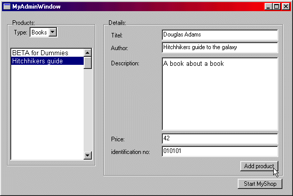
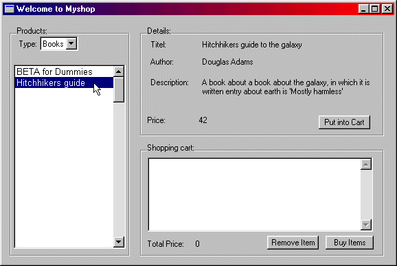

Guided Tour
MyShop The classes that define the objects in the model
MyGui The graphical user interface.
MyProgram The main application which ties the model with the graphical user interface.
The first screen is the administration part of the program, where new products can be inserted. On the left is the list of products already in the system, the right is for inserting new products, and finally the start button is for starting the customer interface of the program.

The next window is the sales window, where the customer can browse through
the products, and enter them into the virtual shopping cart, which ends
up with a print out at the clerk's desk. The clerk then finds the products,
and make them ready for the customer.
Again the left box is a list of the products from which the customer
can choose. If a product is selected from the list, the box named 'Details'
will give the customer the details. In the bottom right is where the shopping
cart is presented, with a list of items currently in the cart, the total
price, and a button 'Buy Items' which sends the printout to the clerk.

| Mjølner Tool - Guided Tour | © Mjølner Informatics |